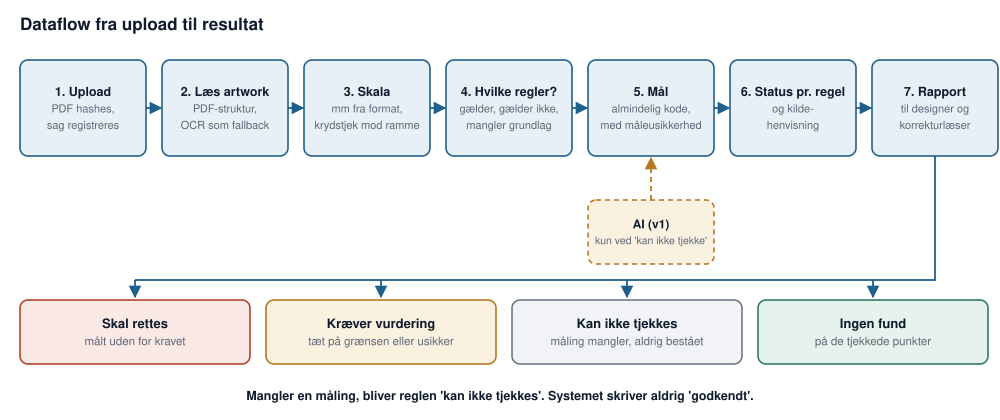
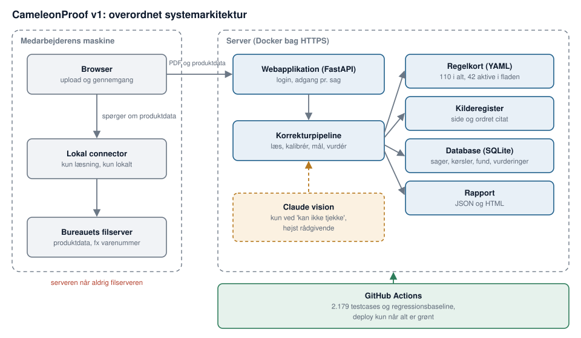
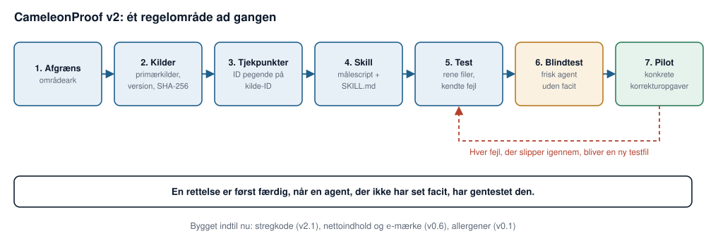
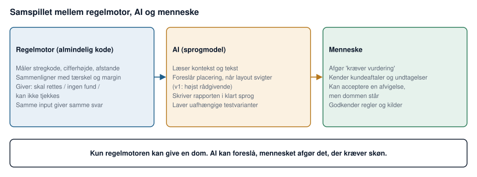

Klientprojekt for Cameleon Creatives A/S
Oliver Bruhn Lyngaa Wegeberg, cand.merc. og AI-first udvikler
Designeren kører den trykfærdige PDF. Systemet måler og tjekker reglerne og svarer med kildehenvisning:
Systemet siger aldrig "godkendt".
Forretningspotentialet og dataanalysen
korrekturer om året á cirka en time, ifølge ledelsens skøn
ifølge min egen analyse af bureauets tidsregistreringer og korrekturrunderne på filserveren
skal give de første målte tal: fund pr. fil, falske alarmer og tid pr. korrektur
Bureauets interne tal vises ikke. Skønnene er ikke bekræftet af Cameleon.
Løsningen og brugerflowet

Systemarkitektur og teknologiske valg

Python, FastAPI, PyMuPDF, zxing-cpp, Tesseract, SQLite, Docker og GitHub Actions
AI-first udviklingsmetoden

| Mig | problem og afgrænsning, krav og acceptkriterier, regler og kilder, statusmodel, testmetode og fejlmargin |
|---|---|
| AI-kodeagenter | kode, tests, rapporter og dokumentation ud fra skrevne direktiver |
| Uafhængige agenter | laver testfiler uden at kende koden, blindtester uden facit og kontrollerer kilderne mod originalerne |
Kvalitetssikring og håndtering af usikkerhed
og 10 rigtige designs med 1.110 låste resultater i version 1. 40 af 42 kildehenvisninger kontrolleres automatisk.
fødevareregler havde aldrig udløst deres fejlgren. Derfor blev fødevaremærkningen slået fra i fladen.
fejlvarianter blev fundet i første blindtest af nettoindhold (version 2), uden falsk "ret" på de 6 fejlfri filer. Målingerne afveg højst 0,031 mm.

Et menneske kan bekræfte, men ikke omstøde en målt dom. En accepteret afvigelse registreres ved siden af dommen.
Status, næste skridt og hvad projektet viser